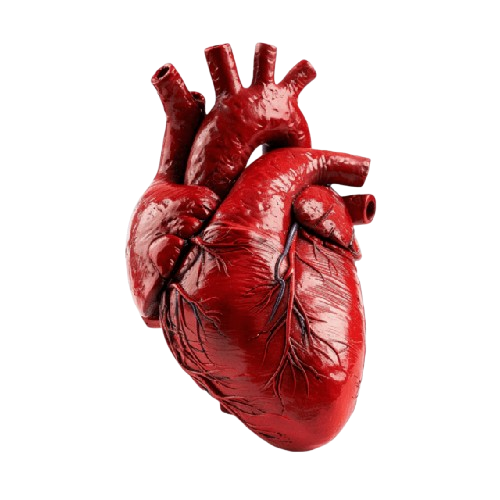

Coração recém removido
O coração foi cuidadosamente retirado e armazenado no dia 14/03/2026, este produto foi doado por um jovem saudável com muito carinho para nossa renomada instituição de leilão caridoso, está em perfeito estado e lembrem-se, todos so nossos lucros serão doados para os mais necessitados.